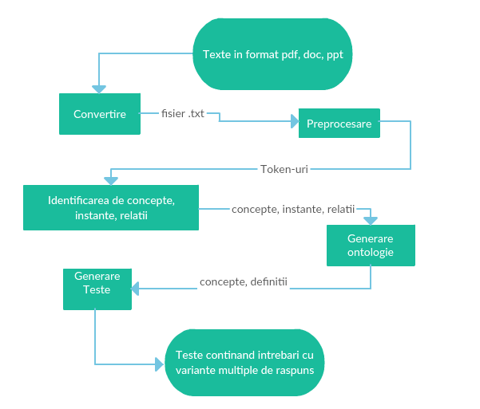

Modulul de Generare de Teste
(grupa A7)
Modulul de generare al testelor are ca scop principal generarea unor întrebări cu variante multiple de răspuns plecând de la o ontologie. Sub modulele acestui modul cuprind:
Pre procesarea textelor.
Identificarea termenilor, relațiilor, proprietăților și a instanțelor.
Constituirea unei ontologii de bază și a inferențelor de administrare.
Flow-ul aplicatiei:

Demo
Aplicatia de generare de teste
Mentiuni:
Aplicatia nu a putut fi integrata in totalitate, motiv pentru care nu s-a mai folosit generarea de output de aici
Ca rezerva, am folosit o ontologie generata automat si nu a mai fost nevoie de generare a unui output dintr-un fisier doc(docx) sau pdf